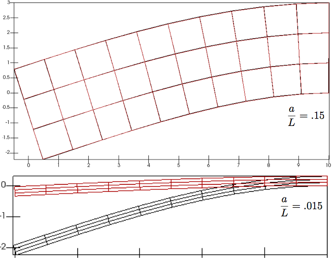

6.5. Shear Locking¶
References
- This one
6.5.1. Background¶
Consider the cantilever beam with length \(L\) and height \(2a\) shown

The top and bottom of the beam are traction free, the right hand side is fixed, and the left hand side is subjected to a force \(P\).
The analytical solution to this problem is given in [1].
Shown are comparisons of the analytic solutions with finite element solutions obtained with standard 4 noded bilinear quadrilateral plane stress elements. Results are shown for two different ratios of \(a/L\) , with \(PL^3/Ea^3=2.22\) for both cases.
{kind=link}
For the thick beam, the finite element and analytic solutions agree nearly perfectly. For the slender beam, the finite element solution is very poor – even though the mesh resolution is unchanged. The error in the finite element solution occurs because the standard 4 noded quadrilateral elements cannot accurately approximate the strain distribution associated with bending. This phenomenon is known as shear locking.
Shear locking is caused by the linear nature of the quadrilateral elements. The linear elements cannot accurately model the bending induced curvature in the actual problem. Consequently, the interpolation functions give rise to unphysical shear stresses and strains in bent elements. The additional shear stress in the element causes the element to reach equilibrium with smaller displacements, i.e., it makes the element appear to be stiffer than it actually is.
The solution would eventually converge if a large number of elements were added along the length of the beam. The elements would have to be roughly square, which would require about 133 elements along the length of the beam, giving a total mesh size of about 500 elements.
| [1] | Applied Mechanics of Solids, Ch 5.2 |